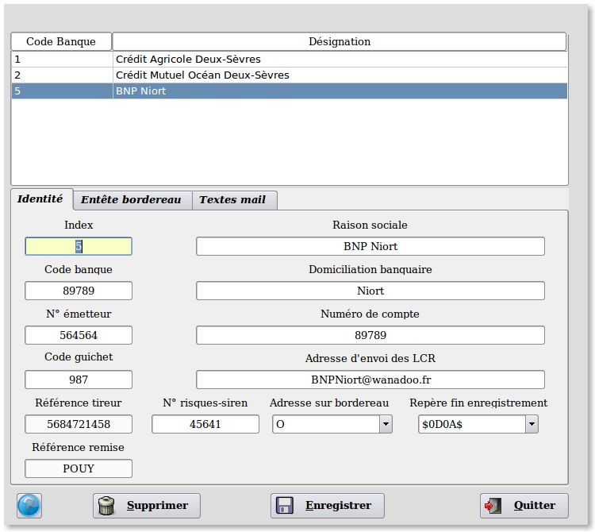
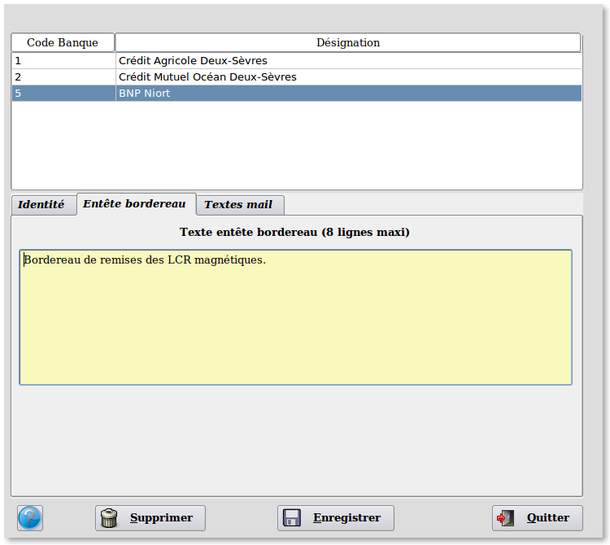
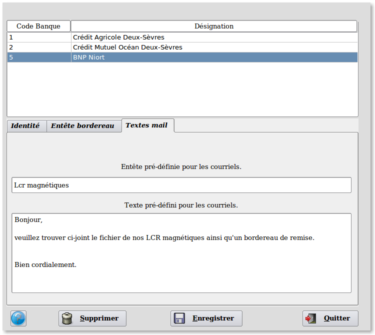

~ Laurux.LCR ~

~ Laurux.LCR ~ |
|
|
|
Table des banques.

Le premier onglet du programme permet la saisie des caractéristiques de vos banques et n'appelle pas de remarques particulières hormis les deux dernières zones.
La zone "Adresse
sur bordereau" permet de
définir si l'adresse du tiré doit apparaitre.
Trois choix sont possibles :
"N" l'adresse
n'apparaitra pas, "O" l'adresse
apparaitra, "C" l'adresse figurera
si code entrée > 4 (loi Dailly).
La zone "Repère fin d'enregistrement" $0D0A$ devra apparaitre dans le fichier texte généré si la banque le demande ou Ws pour une fin d'enregistrement Windows.

Le deuxième onglet concerne "L'entête
du bordereau". On
peut saisir 8 lignes maximum.

Le troisème onglet concerne les "Textes
mail"
c'est à dire l'entête et le texte du corps du courriel qui seront
automatiquement proposés lors de la génération du courriel destiné à la
banque et contenant le bordereau de remise de LCR ainsi que le fichier
des LCR en pièce jointe.
----------------------------------------------------------------------------------------------------------------------